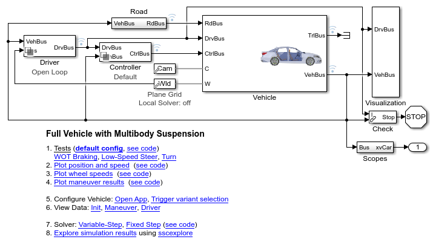
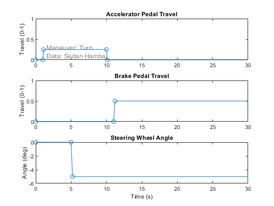
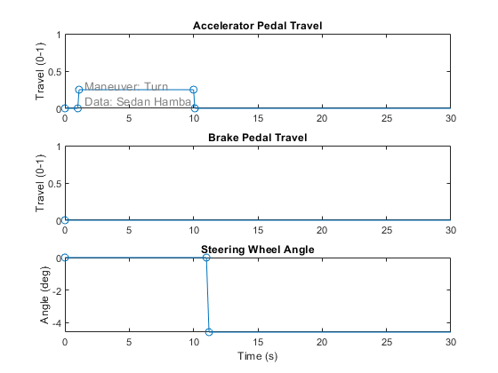
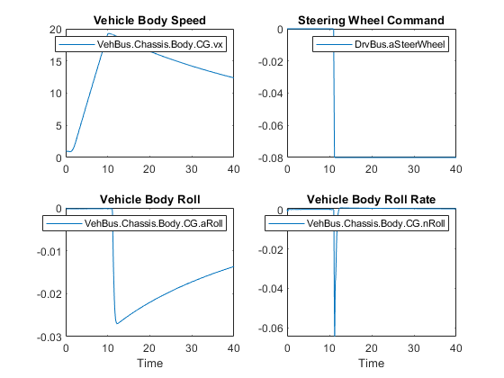
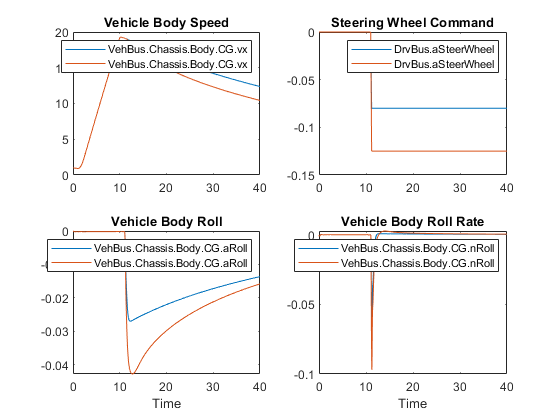

Customize Step Steer Test
The commands below run the vehicle through a step steer test by modifying the parameters for a maneuver. In the adjusted maneuver, the driver accelerates, releases the accelerator pedal, and then applies a step input to the steering wheel. The final steering angle differs in the two tests, and we can see differences in roll angle and vehicle speed. The Simulink Data Inspector let us easily compare vehicle body measurements.
Contents
- Step 1: Open Model
- Step 2: Configure Model
- Step 3: Select Event
- Step 4: Modify Event
- Step 5: Run simulation with nominal damping
- Step 6: Explore simulation results in Simulink Data Inspector
- Step 7: Increase step input to the steering wheel
- Step 8: Run simulation with increased steer angle
- Step 9: Add simulation results to the Simulink Data Inspector
Step 1: Open Model
This can be done from the MATLAB UI, project shortcut, or MATLAB Command line.
mdl = 'sm_car';
open_system(mdl)
 Step 2: Configure Model
This can be done from the MATLAB UI or the MATLAB Command line. It involves loading a data structure into the MATLAB workspace that includes the desired vehicle model configuration and parameters
if verLessThan('matlab', '9.11') sm_car_load_vehicle_data(mdl,'139'); % MFeval tire else sm_car_load_vehicle_data(mdl,'189'); % Multibody tire, R21b and higher end
Step 3: Select Event
This can be done from the MATLAB UI or the MATLAB Command line. It configures the driver model for open/closed loop maneuvers and loads the necessary parameters into the MATLAB workspace.
The plot shows the actions the driver will take during this maneuver. You can produce this plot from the MATLAB UI or the MATLAB Command line.
sm_car_config_maneuver('sm_car','Turn'); sm_car_plot_maneuver(Maneuver) subplot(311); set(gca,'XLim', [0 30])
Step 4: Modify Event
Configure a step steer with no braking. This is done by modifying a few vectors of data in the MATLAB workspace so that the steering input takes place after the driver has released the accelerator pedal and so that the driver does not step on the brakes during the test.
% Adjust nominal steering angle Maneuver.Steer.aWheel.Value = [0 0 -0.08 -0.08 0 0]; % Adjust time for steering input to take place after accelerator pedal has % been released Maneuver.Steer.t.Value = [0 11.0 11.2 180 181 200]; % Adjust time for brake input to take place after test is complete (no % braking) Maneuver.Brake.t.Value = [0 100 100.2 180 181 200]; sm_car_plot_maneuver(Maneuver) subplot(311); set(gca,'XLim', [0 30])
Step 5: Run simulation with nominal damping
This can be done from Simulink or from the MATLAB command line.
sim(mdl)
Step 6: Explore simulation results in Simulink Data Inspector
Use the Simulink Data Inspector to plot the following quantities:
sm_car_ex02_stepsteer_plot1
Step 7: Increase step input to the steering wheel
Adjusting these numerical values in the Maneuver data structure will increase the magnitude of the steering input.
Maneuver.Steer.aWheel.Value = [0 0 -0.125 -0.125 0 0];
Step 8: Run simulation with increased steer angle
This can be done from Simulink or from the MATLAB command line.
sim(mdl)
Step 9: Add simulation results to the Simulink Data Inspector
Use the Simulink Data Inspector to plot the following quantities from the both runs.
sm_car_ex02_stepsteer_plot2
close all